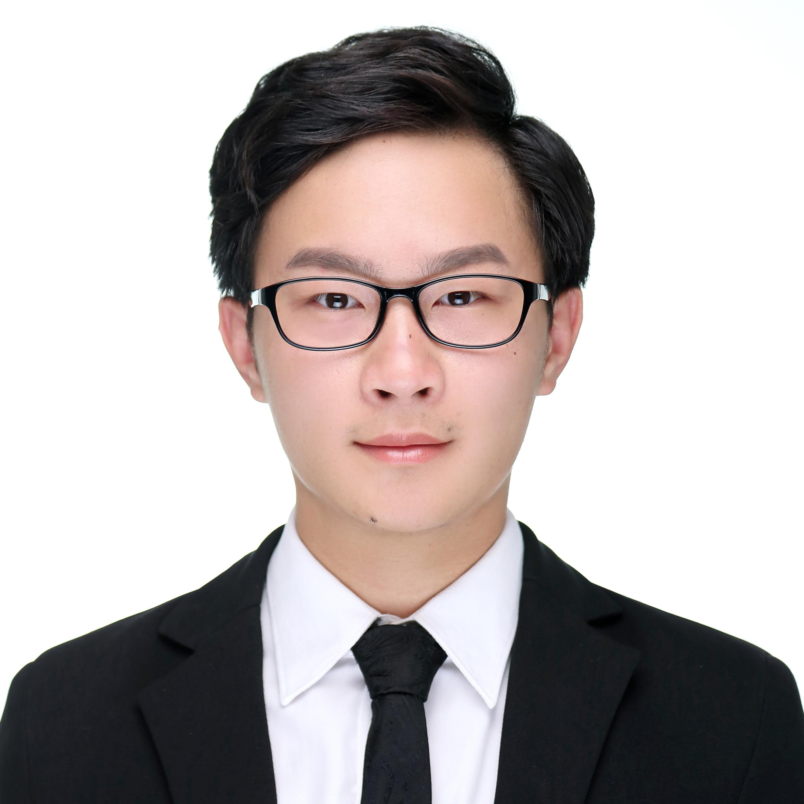
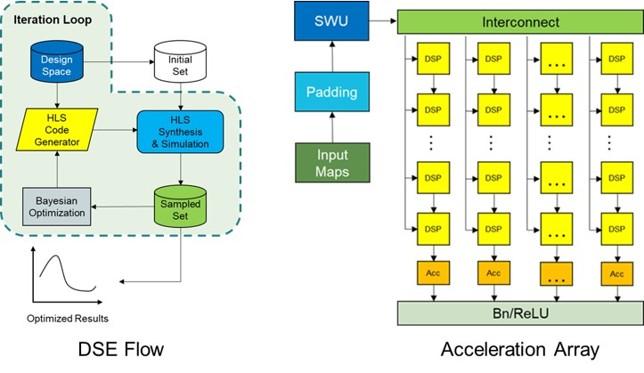
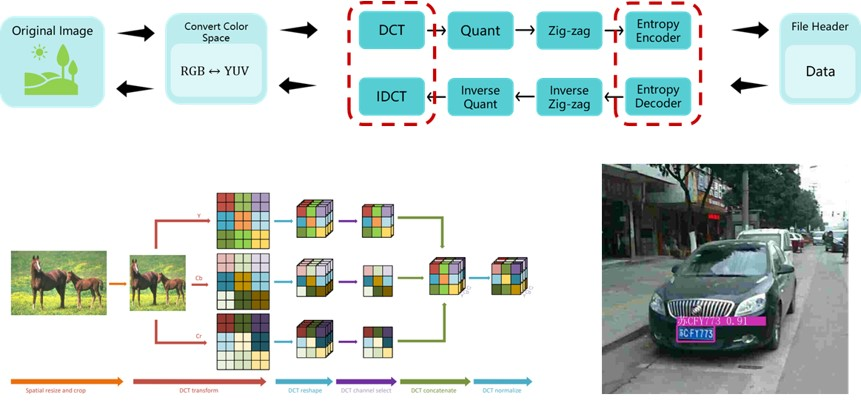

Erjing (Matthew) Luo | 罗尔竟
|  |
Senior Undergraduate Student |
About Me
I am a senior student majoring in Electronic Information Engineering at Beijing Institute of Technology, expected to graduate in June 2023. Currently, I also serve as a research assistant at Institute of Computing Technology (ICT), Chinese Academy of Sciences, under the supervision of Prof. Cheng Liu. I'm broadly interested in designing domain-specific hardware to handle computation-intensive tasks like Deep Learning. If you're interested in my research or projects, please feel free to contact me!
At present, I'm actively looking for a research-based master or Ph.D position in 2023 fall.
News
-
[Aug 2022] Our work is awarded the national first prize in the 6th China College IC Contest(第六届全国大学生集成电路创新创业大赛), in Chongqing, China. (Repository)
-
[Jul 2022] Our team InvolutionNet won the 3rd place in the 2022 DAC System Design Test, in San Francisco, USA. (Result)
-
[Mar 2022] I joined Prof. Cheng Liu's group as a RA at State Key Laboratory of Computer Architecture, ICT.
Research Interest
-
FPGA-based Reconfigurable Computing
-
Domain-specific Architecture for Deep Learning
-
Digital VLSI Design
Publication
Still working on it, and wish there will be some good news.
Education
Beijing Institute of Technology (2019.9 ~ 2023.6 Expected)
-
B.Eng in Electronic Information Engineering
-
First-3-year GPA: 91.05/100
-
First-3-year Academic Performance Rank: 14/389 (top 3.6%)
Research Experience
State Key Laboratory of Computer Architecture, ICTBeijing, China (2022.3 ~ 2023.6 Expected)
|
 |
Microelectronics Technology Lab, BITBeijing, China (2021.11 ~ 2022.10)
|
 |
SELECTED AWARDS & HONORS
-
National first prize in the 6th China College IC Contest (第六届全国大学集成电路创新创业大赛), Chongqing, China, Aug 2022
-
The 3rd place in the 2022 DAC System Design Contest, San Francisco, USA, Jul 2022
-
National Third Prize of the 4th National College Students Embedded Chip and System Design Contest (第四届全国大学生嵌入式芯片与系统设计竞赛), Nanjing, China, Oct 2021
-
Second Prize of the 7th China International ‘Internet Plus’ College Students Innovation and Entrepreneurship Contest (第七届中国国际 “互联网+”大学生创新创业大赛), Beijing, China, Aug 2021
-
Second-class Scholarship for Academic Excellence, Beijing Institute of Technology, Apr 2022, Nov 2021, Jun 2021, Nov 2020, May 2020
-
Third Prize of the 37th National Physics Contest for College Students (第三十七届全国部分地区大学生物理竞赛), Beijing, China, Dec 2020
Skills
-
Programming Languages: C/C++, Python
-
Hardware Description Languages: Verilog, VHDL
-
Software & Tools: Matlab, Vivado, Vivado HLS, Pytorch, Design Compiler, Virtuoso, Modelsim, HFSS
-
Languages: Chinese (Native), English (IELTS: 7.0)